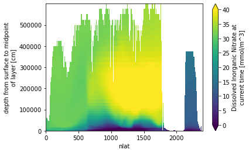

Regrid data to model grid#
%load_ext autoreload
%autoreload 2
import os
import subprocess
from glob import glob
import xarray as xr
import matplotlib.pyplot as plt
import matplotlib.colors as colors
import pop_tools
import util2
import numpy as np
from datetime import date, datetime, timezone
Setup parameters#
src_grid = 'POP_gx1v7'
dst_grid = 'POP_tx0.1v3'
method = 'conserve'
clobber = True
get_dst_grid = pop_tools.get_grid
def get_regridder(src_grid, dst_grid, method):
os.makedirs('data/regridding', exist_ok=True)
dst_grid_file= f'data/regridding/{dst_grid}.nc'
src_grid_file = f'data/regridding/{src_grid}.nc'
weight_file = f'data/regridding/{src_grid}_to_{dst_grid}_{method}.nc'
if not os.path.exists(src_grid_file) or clobber:
dso = get_dst_grid(src_grid, scrip=True)
print(f'writing {src_grid_file}')
dso['grid_imask'].data[:]=1
print(dso)
dso.to_netcdf(src_grid_file)
if not os.path.exists(dst_grid_file) or clobber:
dso = get_dst_grid(dst_grid, scrip=True)
print(f'writing {dst_grid_file}')
#dso
dso.to_netcdf(dst_grid_file)
if not os.path.exists(weight_file) or clobber:
cmd = ['ESMF_RegridWeightGen', '--netcdf4', '--ignore_unmapped',
'-s', src_grid_file, '-d', dst_grid_file, '-m', method, '-w', weight_file]
out = subprocess.run(cmd, capture_output=True, check=True)
print(out.stdout.decode('UTF-8'))
return util2.regridder(src_grid_file, dst_grid_file, weight_file)
regrid_op = get_regridder(src_grid, dst_grid, method)
regrid_op
/glade/work/kristenk/miniconda/envs/analysis5/lib/python3.7/site-packages/numba/np/ufunc/parallel.py:365: NumbaWarning: The TBB threading layer requires TBB version 2019.5 or later i.e., TBB_INTERFACE_VERSION >= 11005. Found TBB_INTERFACE_VERSION = 6103. The TBB threading layer is disabled.
warnings.warn(problem)
writing data/regridding/POP_gx1v7.nc
<xarray.Dataset>
Dimensions: (grid_corners: 4, grid_rank: 2, grid_size: 122880, nreg: 13)
Coordinates:
* nreg (nreg) int64 0 1 2 3 4 5 6 7 8 9 10 11 12
Dimensions without coordinates: grid_corners, grid_rank, grid_size
Data variables:
grid_dims (grid_rank) int32 320 384
grid_center_lat (grid_size) float64 -79.22 -79.22 -79.22 ... 72.19 72.19
grid_center_lon (grid_size) float64 -39.44 -38.31 -37.19 ... -40.65 -40.22
grid_corner_lat (grid_size, grid_corners) float64 -78.95 -78.95 ... 71.96
grid_corner_lon (grid_size, grid_corners) float64 321.1 320.0 ... 320.0
grid_imask (grid_size) int64 1 1 1 1 1 1 1 1 1 1 ... 1 1 1 1 1 1 1 1 1
region_name (nreg) <U21 'Black Sea' 'Baltic Sea' ... 'Hudson Bay'
region_val (nreg) int64 -13 -12 -5 1 2 3 4 6 7 8 9 10 11
Attributes:
lateral_dims: [384, 320]
vertical_dims: 60
vert_grid_file: gx1v7_vert_grid
horiz_grid_fname: inputdata/ocn/pop/gx1v7/grid/horiz_grid_20010402.ieeer8
topography_fname: inputdata/ocn/pop/gx1v7/grid/topography_20161215.ieeei4
region_mask_fname: inputdata/ocn/pop/gx1v7/grid/region_mask_20151008.ieeei4
type: dipole
conventions: SCRIP
title: POP_gx1v7 grid
writing data/regridding/POP_tx0.1v3.nc
Starting weight generation with these inputs:
Source File: data/regridding/POP_gx1v7.nc
Destination File: data/regridding/POP_tx0.1v3.nc
Weight File: data/regridding/POP_gx1v7_to_POP_tx0.1v3_conserve.nc
Source File is in SCRIP format
Source Grid is a global grid
Source Grid is a logically rectangular grid
Use the center coordinates of the source grid to do the regrid
Destination File is in SCRIP format
Destination Grid is a global grid
Destination Grid is a logically rectangular grid
Use the center coordinates of the destination grid to do the regrid
Regrid Method: conserve
Pole option: NONE
Ignore unmapped destination points
Output weight file in NetCDF4 file format
Line Type: greatcircle
Norm Type: dstarea
Extrap. Method: none
Completed weight generation successfully.
source grid dims: (384, 320)
destination grid dims: (2400, 3600)
regridder POP_gx1v7.nc --> POP_tx0.1v3.nc
# def get_ClusterClient():
# import dask
# from dask_jobqueue import PBSCluster
# from dask.distributed import Client
# cluster = PBSCluster(
# cores=2,
# memory='256GB',
# processes=1,
# queue='casper',
# resource_spec='select=1:ncpus=2:mem=256GB',
# project='NCGD0011',
# walltime='04:00:00',
# interface='ib0',)
# dask.config.set({
# 'distributed.dashboard.link':
# 'https://jupyterhub.hpc.ucar.edu/stable/user/{USER}/proxy/{port}/status'
# })
# client = Client(cluster)
# return cluster, client
# cluster, client = get_ClusterClient()
# cluster.scale(12)
#client
tracernames = ['O2','NO3'] #'diazC', 'diazChl', 'diazFe', 'diazP',
# 'coccoC', 'coccoChl', 'coccoFe', 'coccoP', 'coccoCaCO3',
# 'microzooC','mesozooC',
# 'DOC', 'DOCr', 'DON', 'DONr', 'DOP', 'DOPr', 'NH4',
# 'Fe', 'Lig',
# 'ALK_ALT_CO2','DIC_ALT_CO2', #added these here
# 'NO3', 'PO4', 'SiO3', 'O2', 'DIC', 'ALK',
# 'spC', 'spChl', 'spFe', 'spP',
# 'diatC', 'diatChl', 'diatFe', 'diatP', 'diatSi',
# ]
refcase = 'g.e22.GOMIPECOIAF_JRA-1p4-2018.TL319_g17.4p2z.001'
refdate = '0306-01-01'
dirin_refcase = f'/glade/scratch/kristenk/archive/{refcase}/rest/{refdate}-00000'
fname_refcase = f'{dirin_refcase}/{refcase}.pop.r.{refdate}-00000.nc'
ds_out = pop_tools.get_grid(grid_name=dst_grid)
# add z_t_bounds
z_t_edges = np.concatenate(([0.0], np.cumsum(ds_out.dz)))
z_t_bounds_vals = np.stack((z_t_edges[:-1], z_t_edges[1:]), axis=1)
ds_out['z_t_bounds'] = xr.DataArray(z_t_bounds_vals, dims=('z_t', 'd2'),
coords={'z_t':ds_out.z_t})
ds_out['z_t'].attrs['bounds'] = 'z_t_bounds'
# generate 3D grid masks
def gen_MASK(ds_grid):
nk = len(ds_grid.z_t)
nj, ni = ds_grid.KMT.shape
# make 3D array of 0:km
zero_to_km = xr.DataArray(np.arange(0, nk), dims=('z_t'))
ONES_3d = xr.DataArray(np.ones((nk, nj, ni)), dims=('z_t', 'nlat', 'nlon'))
ZERO_TO_KM = (zero_to_km * ONES_3d)
# mask out cells where k is below KMT
MASK = ZERO_TO_KM.where(ZERO_TO_KM < ds_grid.KMT)
MASK = xr.where(MASK.notnull(), True, False)
MASK['z_t'] = ds_grid.z_t
return MASK
MASK_out = gen_MASK(ds_out)
(nk_out, nj_out, ni_out) = MASK_out.shape
grid_refcase = pop_tools.get_grid(grid_name=src_grid)
MASK_refcase = gen_MASK(grid_refcase)
(nk_refcase, nj_refcase, ni_refcase) = MASK_refcase.shape
ds_grid = pop_tools.get_grid('POP_gx1v7')
nk = len(ds_grid.z_t)
nj, ni = ds_grid.KMT.shape
ONES_3d = xr.DataArray(np.ones((nk, nj, ni)), dims=('z_t', 'nlat', 'nlon'))
MASK = xr.where(ONES_3d.notnull(), True, False)
do lateral fill on x1#
filled_ds_refcase = xr.Dataset()
ds_refcase = xr.open_dataset(fname_refcase).rename({'k':'z_t', 'j':'nlat', 'i':'nlon'})
ds_refcase['z_t'] = ds_out['z_t'][0:nk_refcase]
ltripole = True
for v in tracernames:
print(v)
tracer = ds_refcase[v+'_CUR']
tracer = tracer.where(MASK_refcase)
# perform lateral fill
#ds_out[v] = pop_tools.lateral_fill(ds_out[v], MASK_out, ltripole=ltripole) #, iter_max=1000, use_dask=True)
filled_ds_refcase[v] = pop_tools.lateral_fill(tracer, MASK, ltripole=False, use_sor=True, max_iter=1000)
O2
NO3
filled_ds_refcase.NO3.isel(z_t=0).plot()
<matplotlib.collections.QuadMesh at 0x2b614a671690>
# dirout = '/glade/scratch/kristenk/cesm_inputdata'
# os.makedirs(dirout, exist_ok=True)
%%time
for v in tracernames:
print(v)
tracer = filled_ds_refcase[v]
#tracer = tracer.where(MASK_refcase)
ds_out[v] = regrid_op.regrid_dataarray(
filled_ds_refcase[v],
renormalize=True,
apply_mask=True) #True
ds_out[v].attrs = ds_refcase[v+'_CUR'].attrs
ds_out.attrs = ds_refcase.attrs
# perform lateral fill
#ds_out[v] = pop_tools.lateral_fill(ds_out[v], MASK_out, ltripole=ltripole) #, iter_max=1000, use_dask=True)
#ds_out[v] = pop_tools.lateral_fill(ds_out[v], MASK_out, ltripole=ltripole, use_sor=True, max_iter=1000)
# perform vertical fill
unfilled = ds_out[v].isnull() & (MASK_out == 1.)
if unfilled.any():
for k in range(1, nk_out):
ds_out[v][k, :, :] = xr.where(unfilled[k, :, :],
ds_out[v][k-1, :, :],
ds_out[v][k, :, :])
if (ds_out[v].isnull() & (MASK_out == 1.)).any():
print(f'{v} still has missing values')
ds_out[v] = ds_out[v].where(MASK_out == 1.)
O2
NO3
CPU times: user 25.9 s, sys: 36.1 s, total: 1min 1s
Wall time: 1min 4s
np.sum(np.isnan(ds_out.NO3.isel(z_t=0)))
<xarray.DataArray 'NO3' ()>
array(3237440)
Coordinates:
z_t float64 500.0xarray.DataArray
'NO3'
- 3237440
array(3237440)
- z_t()float64500.0
- units :
- cm
- long_name :
- depth from surface to midpoint of layer
- positive :
- down
- bounds :
- z_t_bounds
array(500.)
np.sum(1-MASK_out.isel(z_t=0))
<xarray.DataArray ()>
array(3237440)
Coordinates:
z_t float64 500.0xarray.DataArray
- 3237440
array(3237440)
- z_t()float64500.0
- units :
- cm
- long_name :
- depth from surface to midpoint of layer
- positive :
- down
- bounds :
- z_t_bounds
array(500.)
Read in the eight tracers I interpolated Keith’s way#
ds_compare=xr.open_dataset('/glade/scratch/kristenk/ds_out_8tracers.nc')
ds_compare
<xarray.Dataset>
Dimensions: (d2: 2, nlat: 2400, nlon: 3600, z_t: 62, z_w: 62, z_w_bot: 62)
Coordinates:
TLAT (nlat, nlon) float64 ...
TLONG (nlat, nlon) float64 ...
* z_t (z_t) float64 500.0 1.5e+03 2.5e+03 ... 5.625e+05 5.875e+05
* z_w (z_w) float64 0.0 1e+03 2e+03 ... 5.25e+05 5.5e+05 5.75e+05
* z_w_bot (z_w_bot) float64 1e+03 2e+03 3e+03 ... 5.5e+05 5.75e+05 6e+05
Dimensions without coordinates: d2, nlat, nlon
Data variables: (12/17)
ULAT (nlat, nlon) float64 ...
ULONG (nlat, nlon) float64 ...
DXT (nlat, nlon) float64 ...
DYT (nlat, nlon) float64 ...
TAREA (nlat, nlon) float64 ...
KMT (nlat, nlon) int32 ...
... ...
NO3 (z_t, nlat, nlon) float64 ...
PO4 (z_t, nlat, nlon) float64 ...
SiO3 (z_t, nlat, nlon) float64 ...
O2 (z_t, nlat, nlon) float64 ...
DIC (z_t, nlat, nlon) float64 ...
ALK (z_t, nlat, nlon) float64 ...
Attributes:
lateral_dims: [2400 3600]
vertical_dims: 62
vert_grid_file: /glade/work/kristenk/miniconda/envs/analysis2/lib/pyt...
horiz_grid_fname: /glade/p/cesmdata/cseg/inputdata/ocn/pop/tx0.1v3/grid...
topography_fname: /glade/p/cesmdata/cseg/inputdata/ocn/pop/tx0.1v3/grid...
region_mask_fname: /glade/p/cesmdata/cseg/inputdata/ocn/pop/tx0.1v3/grid...
type: tripole
title: POP_tx0.1v3 gridxarray.Dataset
- d2: 2
- nlat: 2400
- nlon: 3600
- z_t: 62
- z_w: 62
- z_w_bot: 62
- TLAT(nlat, nlon)float64...
- units :
- degrees_north
- long_name :
- T-grid latitude
[8640000 values with dtype=float64]
- TLONG(nlat, nlon)float64...
- units :
- degrees_east
- long_name :
- T-grid longitude
[8640000 values with dtype=float64]
- z_t(z_t)float64500.0 1.5e+03 ... 5.875e+05
- units :
- cm
- long_name :
- depth from surface to midpoint of layer
- positive :
- down
- bounds :
- z_t_bounds
array([5.000000e+02, 1.500000e+03, 2.500000e+03, 3.500000e+03, 4.500000e+03, 5.500000e+03, 6.500000e+03, 7.500000e+03, 8.500000e+03, 9.500000e+03, 1.050000e+04, 1.150000e+04, 1.250000e+04, 1.350000e+04, 1.450000e+04, 1.550000e+04, 1.650984e+04, 1.754790e+04, 1.862913e+04, 1.976603e+04, 2.097114e+04, 2.225783e+04, 2.364088e+04, 2.513702e+04, 2.676542e+04, 2.854837e+04, 3.051192e+04, 3.268680e+04, 3.510935e+04, 3.782276e+04, 4.087847e+04, 4.433777e+04, 4.827367e+04, 5.277280e+04, 5.793729e+04, 6.388626e+04, 7.075633e+04, 7.870025e+04, 8.788252e+04, 9.847059e+04, 1.106204e+05, 1.244567e+05, 1.400497e+05, 1.573946e+05, 1.764003e+05, 1.968944e+05, 2.186457e+05, 2.413972e+05, 2.649001e+05, 2.889385e+05, 3.133405e+05, 3.379794e+05, 3.627670e+05, 3.876452e+05, 4.125768e+05, 4.375393e+05, 4.625190e+05, 4.875083e+05, 5.125028e+05, 5.375000e+05, 5.624990e+05, 5.874990e+05]) - z_w(z_w)float640.0 1e+03 ... 5.5e+05 5.75e+05
- units :
- cm
- positive :
- down
- long_name :
- depth from surface to top of layer
array([ 0. , 1000. , 2000. , 3000. , 4000. , 5000. , 6000. , 7000. , 8000. , 9000. , 10000. , 11000. , 12000. , 13000. , 14000. , 15000. , 16000. , 17019.6808, 18076.1292, 19182.1243, 20349.9313, 21592.3446, 22923.3124, 24358.4534, 25915.5793, 27615.2589, 29481.4713, 31542.3736, 33831.2257, 36387.4728, 39258.0478, 42498.885 , 46176.6575, 50370.6883, 55174.9119, 60699.6663, 67072.8582, 74439.803 , 82960.6956, 92804.3538, 104136.8196, 117104.0188, 131809.3626, 148290.0716, 166499.2064, 186301.4408, 207487.3978, 229803.9076, 252990.4017, 276809.8509, 301067.0677, 325613.847 , 350344.8607, 375189.1888, 400101.1634, 425052.4544, 450026.0482, 475012.0091, 500004.6829, 525000.927 , 549999.0364, 574999.0364]) - z_w_bot(z_w_bot)float641e+03 2e+03 ... 5.75e+05 6e+05
- units :
- cm
- positive :
- down
- long_name :
- depth from surface to bottom of layer
array([ 1000. , 2000. , 3000. , 4000. , 5000. , 6000. , 7000. , 8000. , 9000. , 10000. , 11000. , 12000. , 13000. , 14000. , 15000. , 16000. , 17019.6808, 18076.1292, 19182.1243, 20349.9313, 21592.3446, 22923.3124, 24358.4534, 25915.5793, 27615.2589, 29481.4713, 31542.3736, 33831.2257, 36387.4728, 39258.0478, 42498.885 , 46176.6575, 50370.6883, 55174.9119, 60699.6663, 67072.8582, 74439.803 , 82960.6956, 92804.3538, 104136.8196, 117104.0188, 131809.3626, 148290.0716, 166499.2064, 186301.4408, 207487.3978, 229803.9076, 252990.4017, 276809.8509, 301067.0677, 325613.847 , 350344.8607, 375189.1888, 400101.1634, 425052.4544, 450026.0482, 475012.0091, 500004.6829, 525000.927 , 549999.0364, 574999.0364, 599999.0364])
- ULAT(nlat, nlon)float64...
- units :
- degrees_north
- long_name :
- U-grid latitude
[8640000 values with dtype=float64]
- ULONG(nlat, nlon)float64...
- units :
- degrees_east
- long_name :
- U-grid longitude
[8640000 values with dtype=float64]
- DXT(nlat, nlon)float64...
- units :
- cm
- long_name :
- x-spacing centered at T points
[8640000 values with dtype=float64]
- DYT(nlat, nlon)float64...
- units :
- cm
- long_name :
- y-spacing centered at T points
[8640000 values with dtype=float64]
- TAREA(nlat, nlon)float64...
- units :
- cm^2
- long_name :
- area of T cells
[8640000 values with dtype=float64]
- KMT(nlat, nlon)int32...
- long_name :
- k Index of Deepest Grid Cell on T Grid
[8640000 values with dtype=int32]
- REGION_MASK(nlat, nlon)int32...
- long_name :
- basin index number (signed integers)
[8640000 values with dtype=int32]
- dz(z_t)float64...
- units :
- cm
- long_name :
- thickness of layer k
array([ 1000. , 1000. , 1000. , 1000. , 1000. , 1000. , 1000. , 1000. , 1000. , 1000. , 1000. , 1000. , 1000. , 1000. , 1000. , 1000. , 1019.6808, 1056.4484, 1105.9951, 1167.807 , 1242.4133, 1330.9678, 1435.141 , 1557.1259, 1699.6796, 1866.2124, 2060.9023, 2288.8521, 2556.2471, 2870.575 , 3240.8372, 3677.7725, 4194.0308, 4804.2236, 5524.7544, 6373.1919, 7366.9448, 8520.8926, 9843.6582, 11332.4658, 12967.1992, 14705.3438, 16480.709 , 18209.1348, 19802.2344, 21185.957 , 22316.5098, 23186.4941, 23819.4492, 24257.2168, 24546.7793, 24731.0137, 24844.3281, 24911.9746, 24951.291 , 24973.5938, 24985.9609, 24992.6738, 24996.2441, 24998.1094, 25000. , 25000. ]) - z_t_bounds(z_t, d2)float64...
array([[ 0. , 1000. ], [ 1000. , 2000. ], [ 2000. , 3000. ], [ 3000. , 4000. ], [ 4000. , 5000. ], [ 5000. , 6000. ], [ 6000. , 7000. ], [ 7000. , 8000. ], [ 8000. , 9000. ], [ 9000. , 10000. ], [ 10000. , 11000. ], [ 11000. , 12000. ], [ 12000. , 13000. ], [ 13000. , 14000. ], [ 14000. , 15000. ], [ 15000. , 16000. ], [ 16000. , 17019.6808], [ 17019.6808, 18076.1292], [ 18076.1292, 19182.1243], [ 19182.1243, 20349.9313], [ 20349.9313, 21592.3446], [ 21592.3446, 22923.3124], [ 22923.3124, 24358.4534], [ 24358.4534, 25915.5793], [ 25915.5793, 27615.2589], [ 27615.2589, 29481.4713], [ 29481.4713, 31542.3736], [ 31542.3736, 33831.2257], [ 33831.2257, 36387.4728], [ 36387.4728, 39258.0478], [ 39258.0478, 42498.885 ], [ 42498.885 , 46176.6575], [ 46176.6575, 50370.6883], [ 50370.6883, 55174.9119], [ 55174.9119, 60699.6663], [ 60699.6663, 67072.8582], [ 67072.8582, 74439.803 ], [ 74439.803 , 82960.6956], [ 82960.6956, 92804.3538], [ 92804.3538, 104136.8196], [104136.8196, 117104.0188], [117104.0188, 131809.3626], [131809.3626, 148290.0716], [148290.0716, 166499.2064], [166499.2064, 186301.4408], [186301.4408, 207487.3978], [207487.3978, 229803.9076], [229803.9076, 252990.4017], [252990.4017, 276809.8509], [276809.8509, 301067.0677], [301067.0677, 325613.847 ], [325613.847 , 350344.8607], [350344.8607, 375189.1888], [375189.1888, 400101.1634], [400101.1634, 425052.4544], [425052.4544, 450026.0482], [450026.0482, 475012.0091], [475012.0091, 500004.6829], [500004.6829, 525000.927 ], [525000.927 , 549999.0364], [549999.0364, 574999.0364], [574999.0364, 599999.0364]]) - ALK_ALT_CO2(z_t, nlat, nlon)float64...
- long_name :
- Alkalinity, Alternative CO2 at current time
- units :
- meq/m^3
- grid_loc :
- 3111
- regrid_method :
- bilinear
- history :
- 2022-06-27 10:59:13.980349 esmlab.regrid <regrid>
[535680000 values with dtype=float64]
- DIC_ALT_CO2(z_t, nlat, nlon)float64...
- long_name :
- Dissolved Inorganic Carbon, Alternative CO2 at current time
- units :
- mmol/m^3
- grid_loc :
- 3111
- regrid_method :
- bilinear
- history :
- 2022-06-27 11:10:02.757356 esmlab.regrid <regrid>
[535680000 values with dtype=float64]
- NO3(z_t, nlat, nlon)float64...
- long_name :
- Dissolved Inorganic Nitrate at current time
- units :
- mmol/m^3
- grid_loc :
- 3111
- regrid_method :
- bilinear
- history :
- 2022-06-27 11:14:22.016744 esmlab.regrid <regrid>
[535680000 values with dtype=float64]
- PO4(z_t, nlat, nlon)float64...
- long_name :
- Dissolved Inorganic Phosphate at current time
- units :
- mmol/m^3
- grid_loc :
- 3111
- regrid_method :
- bilinear
- history :
- 2022-06-27 11:32:26.209439 esmlab.regrid <regrid>
[535680000 values with dtype=float64]
- SiO3(z_t, nlat, nlon)float64...
- long_name :
- Dissolved Inorganic Silicate at current time
- units :
- mmol/m^3
- grid_loc :
- 3111
- regrid_method :
- bilinear
- history :
- 2022-06-27 11:43:33.965703 esmlab.regrid <regrid>
[535680000 values with dtype=float64]
- O2(z_t, nlat, nlon)float64...
- long_name :
- Dissolved Oxygen at current time
- units :
- mmol/m^3
- grid_loc :
- 3111
- regrid_method :
- bilinear
- history :
- 2022-06-27 11:56:26.456122 esmlab.regrid <regrid>
[535680000 values with dtype=float64]
- DIC(z_t, nlat, nlon)float64...
- long_name :
- Dissolved Inorganic Carbon at current time
- units :
- mmol/m^3
- grid_loc :
- 3111
- regrid_method :
- bilinear
- history :
- 2022-06-27 12:08:06.810951 esmlab.regrid <regrid>
[535680000 values with dtype=float64]
- ALK(z_t, nlat, nlon)float64...
- long_name :
- Alkalinity at current time
- units :
- meq/m^3
- grid_loc :
- 3111
- regrid_method :
- bilinear
- history :
- 2022-06-27 12:12:24.856440 esmlab.regrid <regrid>
[535680000 values with dtype=float64]
- lateral_dims :
- [2400 3600]
- vertical_dims :
- 62
- vert_grid_file :
- /glade/work/kristenk/miniconda/envs/analysis2/lib/python3.7/site-packages/pop_tools/input_templates/tx0.1v3_vert_grid
- horiz_grid_fname :
- /glade/p/cesmdata/cseg/inputdata/ocn/pop/tx0.1v3/grid/horiz_grid_200709.ieeer8
- topography_fname :
- /glade/p/cesmdata/cseg/inputdata/ocn/pop/tx0.1v3/grid/topography_20170718.ieeei4
- region_mask_fname :
- /glade/p/cesmdata/cseg/inputdata/ocn/pop/tx0.1v3/grid/region_mask_20170718.ieeei4
- type :
- tripole
- title :
- POP_tx0.1v3 grid
Compare the fields#
NO\(_3\)#
ds_out.NO3.isel(z_t=0).plot(vmin=0,vmax=30)
<matplotlib.collections.QuadMesh at 0x2b6152ae16d0>
ds_compare.NO3.isel(z_t=0).plot(vmin=0,vmax=30)
<matplotlib.collections.QuadMesh at 0x2b60272aa390>
diff = ds_compare.NO3.isel(z_t=0) - ds_out.NO3.isel(z_t=0)
diff.plot(figsize=(12,6),vmin=-2,vmax=2,cmap='bwr');
O\(_2\)#
ds_out.O2.isel(z_t=0).plot(vmin=100,vmax=400)
<matplotlib.collections.QuadMesh at 0x2b6171698850>
ds_compare.O2.isel(z_t=0).plot(vmin=100,vmax=400)
<matplotlib.collections.QuadMesh at 0x2b617176f210>
diff = ds_compare.O2.isel(z_t=0) - ds_out.O2.isel(z_t=0)
diff.plot(figsize=(12,6),vmin=-10,vmax=10,cmap='bwr');
Look at O2 at ~500m#
ds_out.z_t[32].values
array(48273.6729)
diff = ds_compare.O2.isel(z_t=32) - ds_out.O2.isel(z_t=32)
diff.plot(figsize=(12,6),vmin=-10,vmax=10,cmap='bwr');
Look at O2 1000m#
ds_out.z_t[39].values
array(98470.5867)
diff = ds_compare.O2.isel(z_t=39) - ds_out.O2.isel(z_t=39)
diff.plot(figsize=(12,6),vmin=-10,vmax=10,cmap='bwr');
Check to make sure vertical section looks the same (lon section is approximate)#
ds_out.NO3.isel(nlon=3000).plot(vmin=0, vmax=40);

ds_refcase.NO3_CUR.where(MASK_refcase==1).isel(nlon=210).plot(vmin=0, vmax=40);
ds_out.O2.isel(nlon=3000).plot(vmin=0, vmax=400);
ds_refcase.O2_CUR.where(MASK_refcase==1).isel(nlon=210).plot(vmin=0, vmax=400);